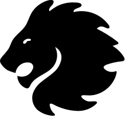

Lion
Leadership, authority and guardianship. It signals strength, confidence and trust in institutional care.
Leader / Majestic

Leadership, authority and guardianship. It signals strength, confidence and trust in institutional care.

Naturally, the letter ‘a’ of our logo stands for antz. But look a little closer and you’ll see there’s much more to it. Each icon within the logo has a rich meaning at its core, representing an aspect of our business, features and our purpose.
Leadership, authority and guardianship. It signals strength, confidence and trust in institutional care.
Elegance and grace. It brings refinement, calm stewardship and a high standard of care.
Part of the fruits cluster. It stands for balanced diets and the daily nutrition planned for every animal.
Part of the fruits cluster. It reflects feeding schedules, food preparation and keepers’ care in the kitchen.
Part of the fruits cluster. It completes the story of variety, enrichment and well-managed nutrition.
Energy and quick movement. It gives a place to the small animals that are just as important as the large ones.
Ambition and open skies. Sitting at the top of the ‘a’, it reminds us to aim high and protect freedom.
Growth, habitat and ecological stability. It grounds the identity in nature, forests and sustainability.
Power with precision. It speaks to agility, strength and the big cats in our care.
Lightness and the written record. It reinforces learning, note-taking and knowledge that is easy to capture.
Wild and one of a kind. It speaks to species diversity, habitat range and a broad ecological view.
Health and treatment. It represents veterinary care, medical records and the wellbeing of every animal.
Finding what matters. It stands for searchable records and data that is always within reach.
Medicine and hands-on care. It reflects dosing, treatment plans and the attention behind every recovery.
New life and breeding. It represents egg tracking, incubation and the next generation of each species.
Compassion and ethical care. It brings human values to the centre of the institution’s mission.
Curiosity, alertness and social awareness. It reflects behavioural understanding and connection.
Speed and efficiency. It stands for quick, focused work that gets more done with less effort.
Slow and steady wisdom. It honours persistence and the long-term commitment behind good care.
Ancient guardians of the water’s edge. It represents protection, patience and the reptile and amphibian world.
Shared discovery. It shows connected institutions exchanging research, evidence and expertise.
Tasks done right. It represents checklists, daily routines and work that is tracked to completion.
The reptile world. It forms the curling base of the ‘a’ and gives cold-blooded species their place.
Conversation and shared knowledge. It reflects teams talking, updating and learning from one another.
Horticulture and living landscapes. It adds the plants and gardens that shape every habitat.
Speed, spirit and renewal. It evokes balance with nature and a respectful relationship with wildlife.
Moving as one. It stands for groups, harmony and teams working together towards a shared goal.
Robust and enduring. It represents sea life, long-term stewardship and the safeguarding of vulnerable species.
Water and the life within it. It expands the system beyond land to the wider aquatic world.
Placed at the centre in perfect symmetry, it is also the eye of the elephant hidden within the ‘a’.
ANTZ is designed to express a connected international system of institutions, expertise and responsibility.
The central idea behind the logo is not only the individual animals, but the relationship between them. Each symbol can be interpreted as a different institution, species focus, discipline or role within a wider conservation community.
One zoo may specialise in primates, another in marine life, another in bird welfare, another in habitat restoration, and another in research and public engagement. Yet all belong to a shared mission: to protect biodiversity, improve welfare standards, and build a more informed world.
In that sense, the ANTZ logo becomes a map of global cooperation. It represents a network of institutions learning from one another, supporting one another, and acting together for the benefit of wildlife and society.